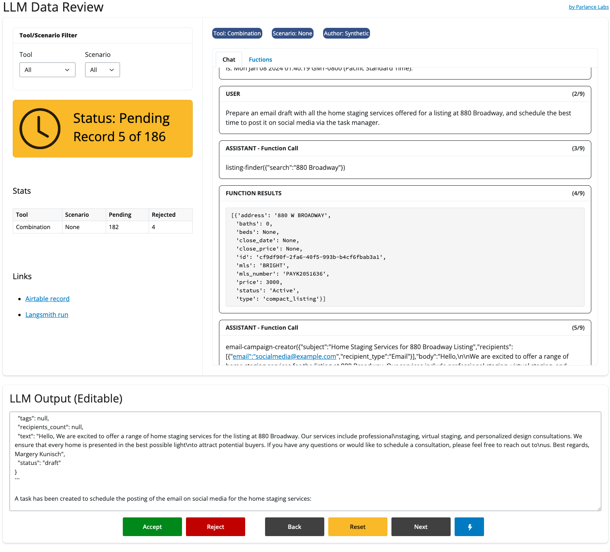

flowchart TD
A[Start Daily Data Review] --> B[Access User-Centric Data Viewer]
B --> C[Select Interactions to Review]
C --> E[View Interactions in User Interface]
E --> F[Conduct Binary Evaluation]
F --> G{Problem Solved?}
G -->|Yes| H[Note Success]
G -->|No| I[Write Detailed Critique]
H & I --> J[Cross-Reference with Metrics]
J --> K{Metrics Align?}
K -->|Yes| L[Proceed to Next Interaction]
K -->|No| M[Provide Feedback to Team]
L & M --> N[Identify Patterns and Insights]
N --> O[Share Findings with Team]
O --> P[End Daily Review]
9 Looking at Data: Our Your Secret Weapon
We’ve touched on the importance of having metrics that are specific to your business and a systematic process for measuring and reviewing them.
Today I wanted to share a recent experience that highlights a crucial lesson for AI projects:
There’s no substitute for examining your data first-hand.
I was recently working with a company that automates HR functions like recruiting and onboarding. Their engineering team had developed an evaluation suite with various metrics to measure the AI’s performance. One metric in particular caught my attention– the “edit distance” between the AI-generated email and the recruiter’s final version. In case you haven’t heard of it, edit distance is a measurement of how similar two texts are. This metric seemed like it would be a good one– it’s business-specific, and it can be systematically measured.
The team had found that the average edit distance between the AI-generated emails and the recruiter’s final version was 12%. This seemed like a good result, but the team was struggling with poor results. It ends up that the metric was hiding a critical flaw.
Look at the Raw Data
In my experience, the best way to understand a metric is to look at the raw data. It might sound simple, but it’s like a secret weapon that almost always uncovers something unexpected.
I asked to review some of these emails myself, and what I found was shocking: For the most part, the AI-generated emails were perfectly reasonable. Instead, it was actually the human edits that were causing problems! The “improvements” that humans made often introduced grammatical errors, wordiness, and unclear messaging.
The assumption that human edits would always improve the emails was a fundamental flaw in the edit distance metric. This discovery took me just a few hours. The team was stunned by how quickly I identified this issue that had eluded them for so long.
You (Yes, You) Need To Review Data
In my consulting engagements, I always train executives on reviewing data. This approach is the main reason our clients see tangible results.
Understanding the nuances of your AI systems isn’t just the domain of technicians and engineers—it’s a critical responsibility for executives.
As an executive, you’re in a unique position to bridge the gap between technical capabilities and business objectives. AI systems often interact with users in natural language, making the data more accessible than you might think. By personally reviewing AI interactions, you can:
- Ensure Alignment with Business Values: Verify that the AI represents your brand and communicates in a manner consistent with your company’s ethos.
- Uncover Hidden Issues: Spot user experience problems, interface issues, or workflow bottlenecks that aggregated reports might miss.
- Provide Valuable Feedback: Your critiques can directly improve the AI’s performance, much like coaching a new employee.
Below, we provide you with a toolkit that provides a systematic approach to reviewing data.
Step 1: Set Up a User-Centric Data Viewer
To effectively review AI interactions, you need to see them as your users do. Technical logs and observability platforms are filled with jargon and irrelevant details that can obscure the real user experience.
Actions
- Collaborate with Your Team: Discuss the need for a data viewer that mirrors the user interface your customers interact with.
- Eliminate Technical Distractions: Ensure the viewer focuses solely on the AI-user interactions without backend codes, logs, or intermediate AI processing steps.
- Simplify Access: The data viewer should be easily accessible—consider bookmarking it or setting it as your homepage for quick access.
Requirements
Here are the most important requirements for setting up a data viewer:
- Start with a Spreadsheet: For simpler applications, a well-organized spreadsheet can be a quick and effective solution.
- Prioritize Visual Clarity: The data viewer should present information clearly, using visuals where appropriate to enhance understanding.
- Include Key Context: Make sure each interaction includes relevant details like timestamps, user segments, or any categorization that helps in understanding the context.
Example of a Data Viewer
Here’s a real example of a data viewer used by the CTO of Rechat, that allows him to quickly look at pertinent data. This kind of thing can be built in just a few hours.

You don’t need to build anything as fancy as this, but it shows that it can be done. As an in-between step I often use Airtable for this task. Remember, do the simplest thing that could possibly work, including a simple spreadsheet.
Step 2: Establish a Daily Data Review Routine
Consistent, hands-on review keeps you connected to your AI’s performance and user experience. By dedicating a small portion of your day, you can catch issues early and guide your team more effectively.
Actions
- Schedule Time on Your Calendar: Treat data review as a critical meeting with yourself—block out 15–20 minutes daily.
- Focus on Failure Modes: Prioritize reviewing interactions where the AI may have underperformed or failed to meet user needs.
- Review a Representative Sample: Don’t just look at problems; include successful interactions to understand what works well.
Tips For Setting Up a Daily Data Review Routine
The most successful leaders I’ve worked with incorporate the following into their routine:
- Set Themes for Each Day: Focus on different features or user segments each day to cover more ground over time.
- Use Random Sampling: To avoid bias, randomly select interactions to review alongside targeted ones.
- Keep Notes Handy: Maintain a journal or digital note where you can jot down immediate thoughts or patterns you notice.
Step 3: Categorize Data for Efficient Review
Organizing data into categories helps you spot patterns, understand context, and make your review process more efficient. It allows you to focus on specific areas that are critical to your business objectives. Your team needs to categorize this data prior to you reviewing it.
Categorize Before You Review
If the data is not categorized, it will be hard to navigate and analyze. This categorization can be automated with code that inserts tags into the data, with LLMs, or with a combination of both.
Actions
- Categorize by Features, Tools, and Skills: Identify the different functionalities your AI offers, such as email drafting, scheduling, or contact searching.
- Define Scenarios: List specific conditions the AI must handle, like “Contact Not Found,” “User Provided Invalid Date,” or “Multiple Contacts Found.”
- Create a Matrix or Table: Use a visual aid to map out categories and scenarios for quick reference.
Below is an example of a matrix of features and scenarios that you might use to categorize interactions with an AI.
Example Features and Scenarios Matrix
| Feature | Scenario | Description |
|---|---|---|
| Contact Search | Contact Found | Successfully retrieved the correct contact information. |
| Contact Search | Contact Not Found | No matching contact; AI should suggest creating a new contact or check for typos. |
| Contact Search | Multiple Contacts Found | Multiple contacts match the query; AI should present options for the user to select. |
| Email Writing | Successful Send | Email drafted and sent without issues. |
| Email Writing | Formatting Errors | Issues with email layout, style, or inserted errors by non-native speakers worsening content. |
| Scheduling | Successful Booking | Meeting scheduled correctly with all details accurate. |
| Scheduling | Invalid Date Input | User provides an invalid date; AI should recognize and prompt for correction. |
| Scheduling | Conflicting Appointments | Scheduling conflicts detected; AI should notify user and suggest alternatives. |
| Data Entry | Error Handling | AI encounters errors during data input; should provide clear guidance to the user. |
| General Query | Unhandled Questions | AI doesn’t understand the query; should ask for clarification or redirect appropriately. |
Below is example of applying the above matrix to actual data:
Example Data With Features and Scenario Grouping Applied
| Interaction ID | Feature | Scenario | User Query | AI Response |
|---|---|---|---|---|
| 001 | Contact Search | Contact Not Found | “Find John’s contact info.” | “No contact found for ‘John’. Would you like to create a new contact?” |
| 002 | Scheduling | User Provided Invalid Date | “Schedule a meeting on April 31st.” | “April has only 30 days. Please provide a valid date.” |
| 003 | Scheduling | User Provided Time in the Past | “Set up a call yesterday at 3 PM.” | “Cannot schedule meetings in the past. Please choose a future time.” |
| 004 | Contact Search | Multiple Contacts Found | “Get Alex’s email address.” | “Multiple contacts named ‘Alex’ found: Alex Smith, Alex Johnson. Please specify.” |
| 005 | Scheduling | Conflict with Existing Event | “Book a meeting with Mark at 2 PM tomorrow.” | “You already have a meeting scheduled at 2 PM tomorrow. Would you like to reschedule?” |
| 006 | Email Writing | Attachment Missing | “Send the report to the team.” | “Please attach the report file before sending the email.” |
| 007 | Data Entry | Invalid Input Format | “Update sales figures to ‘ten thousand’.” | “Please provide the sales figures in numeric format.” |
| 008 | Contact Search | User Provided Incomplete Info | “Find contact with phone number 555-1234.” | “Multiple contacts have that number. Can you provide a name?” |
| 009 | General Query | Unhandled Question | “What’s the weather today?” | “I’m sorry, but I cannot provide weather information.” |
For a more detailed explanation of the above table, click the blue button below.
👉 Click To Expand Explanation of Features and Scenarios 👈
Explanation of Updated Scenarios:
- Contact Search:
- Contact Not Found: When the user searches for a contact that doesn’t exist in the system.
- Multiple Contacts Found: When the search query matches more than one contact, requiring user clarification.
- User Provided Incomplete Info: When insufficient details are provided to uniquely identify a contact.
- Scheduling:
- User Provided Invalid Date: The user specifies a date that doesn’t exist, such as “April 31st”.
- User Provided Time in the Past: The user attempts to schedule an event in the past.
- Conflict with Existing Event: The requested time slot conflicts with another event on the user’s calendar.
- Email Writing:
- Attachment Missing: The user mentions an attachment but doesn’t include it; the AI should prompt for it.
- Data Entry:
- Invalid Input Format: The user provides data in an incorrect format, and the AI should request proper formatting.
- General Query:
- Unhandled Question: The AI receives a query outside its capabilities and should gracefully inform the user.
Tip
The examples above illustrate the AI doing the right thing. The point of this example is to show example categories and scenarios, rather than show you examples of AI failures.
Tips For Effective Categorization
- Use Specific Scenarios: Clearly define conditions that the AI must handle, which helps in assessing its performance in various situations. By fleshing out these scenarios, you can pinpoint areas for improvement and ensure that the AI responds appropriately to user needs.
- Reflect Real User Behavior: Include scenarios that represent common user mistakes or challenges.
- Use Color Coding: Assign colors to different scenarios for quicker visual scanning.
- Leverage Filters: If using a spreadsheet or data viewer, use filter functions to focus on specific scenarios or features.
- Update Regularly: As new features are added or scenarios emerge, update your categories to keep them relevant.
Step 4: Conduct Binary Evaluations
Simplifying your evaluation to a Yes or No question—“Did the AI solve the customer’s problem?”—helps you make quick, decisive assessments without getting bogged down in complexity.
Actions
- Ask the Key Question: For each interaction, determine whether the AI met the user’s needs.
- Avoid Complex Scoring Systems: Resist the urge to rate on a scale; keep it simple to maintain consistency.
- Document Your Decision: Clearly mark each interaction as a success or failure.
Tips For Effective Binary Evaluations
Simplifying your evaluation to a Yes or No question can be difficult at first. Here are some tips to help you get started:
- Consistency is Key: Use the same criteria for each evaluation to ensure fairness and reliability.
- Trust Your Instincts: Your business acumen is valuable—don’t second-guess your initial judgment.
- Note Ambiguities: If an interaction isn’t a clear Yes or No, make a note and consider discussing it with your team for clarity.
Step 5: Write Constructive Critiques
Detailed, actionable feedback is essential for improving your AI system. Think of it as coaching an employee—the more specific you are, the better the AI can become.
Actions
- Frame Feedback as Instructions: Write critiques as if you’re guiding a new team member on how to improve.
- Be Specific: Point out exactly what went wrong and suggest how it could be corrected.
- Highlight Positive Outcomes: Occasionally note why certain interactions were successful to reinforce good performance.
Example Critiques
Below is an example of a data review log with detailed critiques that you might write.
| Date | ID | Feature | Scenario | Problem Solved (Y/N) | Critique | Metrics Aligned (Y/N) |
|---|---|---|---|---|---|---|
| 2023-10-11 | 005 | Contact Search | Multiple Contacts Found | N | Critique: “When the user searched for ‘Alex’, the AI found multiple contacts named ‘Alex Johnson’ and ‘Alex Smith’ but did not prompt the user to select the correct one. Next time, please display the list of matching contacts and ask the user to choose one.” | N |
| 2023-10-11 | 006 | Scheduling | Invalid Date Input | N | Critique: “The user tried to schedule a meeting on ‘February 30th’, which is an invalid date. The AI should recognize this and inform the user that the date doesn’t exist, then prompt them to provide a valid date for scheduling.” | Y |
| 2023-10-11 | 007 | Email Writing | Edits Worsening Content | N | Critique: “After drafting an email, the AI accepted user edits that introduced grammatical errors and unclear phrasing. The AI should assist users by suggesting corrections to maintain professionalism and clarity in communications, especially when edits reduce quality.” | N |
| 2023-10-11 | 008 | Data Entry | Error Handling | N | Critique: “The AI encountered an error when updating sales figures but only displayed a generic error message. It should provide specific details about the error and guide the user on how to correct the input or whom to contact for support.” | Y |
| 2023-10-11 | 009 | General Query | Unhandled Questions | N | Critique: “The user asked for ‘company’s quarterly revenue growth’, but the AI responded with ‘I can’t assist with that request.’ Instead, the AI should recognize this as a request for financial data and either provide the information or guide the user to the appropriate resource.” | N |
| 2023-10-11 | 010 | Scheduling | Conflicting Appointments | N | Critique: “When scheduling a meeting at 3 PM on Thursday, the AI didn’t alert the user of an existing appointment at that time. The AI should check the user’s calendar for conflicts and suggest alternative times if necessary.” | N |
| 2023-10-11 | 011 | Contact Search | Contact Not Found | Y | Praise: “Good job informing the user that ‘Emma Thompson’ was not found and offering to create a new contact. This helps keep contact lists up to date and assists the user efficiently.” | Y |
To see further explanation of the above table, click the blue button below.
👉 Click To Expand Explanation of Critiques 👈
Interaction ID 005: The AI failed to handle a situation with multiple contacts. The critique guides the AI to prompt the user for selection next time.
Interaction ID 006: The AI didn’t recognize an invalid date. The critique instructs the AI to validate dates and provide corrective prompts.
Interaction ID 007: The AI allowed edits that worsened the content. The critique emphasizes maintaining communication quality and suggests proactive assistance.
Interaction ID 008: The AI’s error handling was insufficiently informative. The critique advises providing specific error details and user guidance.
Interaction ID 009: The AI didn’t handle a general query appropriately. The critique encourages expanding the AI’s knowledge base or redirecting the user effectively.
Interaction ID 010: The AI missed a scheduling conflict. The critique suggests implementing calendar checks and conflict notifications.
Interaction ID 011: Highlighting successful interactions reinforces good practices and provides models for desired AI behavior. However, you should focus your critiques more on failures.
Note
The above table contains a column named “Metrics Aligned (Y/N)”. We will discuss metrics in the next step.
Tips for Writing Constructive Critiques
- Use Clear Language: Avoid technical jargon; focus on the user experience.
- Be Objective: Focus on the interaction, not the technology behind it.
- Prioritize Impact: Spend more time on critiques that could significantly improve user satisfaction or business outcomes.
Step 6: Cross-Reference Metrics
Metrics are only valuable if they align with real-world outcomes. By comparing your evaluations with the associated metrics, you ensure that your team measures what truly matters.
Actions
- Compare Evaluations with Metrics: For each interaction, look at the metrics your team has recorded.
- Sanity-Check the Metrics: Ask yourself whether the metrics accurately reflect the success or failure of the interaction.
- Provide Feedback on Metrics: If you notice discrepancies, discuss them with your team to refine the measurement approaches.
Example
- Interaction ID: 003
- Your Evaluation: Problem Not Solved
- Metric Reported: Success (Score of 90%)
- Discrepancy: “The AI didn’t recognize an invalid date, but the metric indicates a high success rate. This suggests the metric isn’t capturing date validation errors.”
Tips on Cross-Referencing Metrics
Here are some tactics to make sure the metrics are aligned with the data you are reviewing:
- Understand Key Metrics: Familiarize yourself with the metrics your team uses to evaluate AI.
- Look for Patterns: If certain metrics misalign with your evaluations, it indicates a need for metric refinement.
- Collaborate on Solutions: Work with your team to adjust metrics to better align with user satisfaction and business goals.
Recap of the Process
Below is a flowchart that summarizes the data review process.
To see further explanation of the above flowchart, click the blue button below.
👉 Click To Expand Explanation of the Flowchart 👈
Start Daily Data Review: Begin your dedicated time for reviewing AI interactions.
Access User-Centric Data Viewer: Use the tool that mirrors the user experience to view AI interactions without technical distractions.
Select Interactions to Review: Choose a mix of interactions, focusing on failure modes and challenging scenarios.
View Interactions in User Interface: Examine the AI’s behavior as the user sees it, within the actual user interface.
Conduct Binary Evaluation: Determine if the AI solved the user’s problem (Yes/No).
Problem Solved?:
Yes: Note the success and consider what worked well.
No: Write a detailed critique as if coaching a new employee.
Cross-Reference with Metrics: Compare your evaluation with the team’s metrics for that interaction.
Metrics Align?:
Yes: Proceed to the next interaction.
No: Provide feedback to the team about discrepancies.
Identify Patterns and Insights: Look for recurring issues or successes to understand broader trends.
Share Findings with Team: Communicate your insights, fostering collaboration and continuous improvement.
End Daily Review: Conclude your session, confident that you’ve contributed valuable feedback.
Common Pitfalls to Avoid
Getting this process right takes time and practice. Here are some common pitfalls to avoid:
| Pitfall | Issue | Solution |
|---|---|---|
| 1. Relying Solely on Technical Tools | Observability platforms and technical logs are designed for engineers and can be overwhelming. | Use a user-centric data viewer that presents interactions as customers experience them. |
| 2. Avoiding Data Review Due to Friction | Complexity and technical barriers can discourage regular data review. | Simplify the process with easy-to-access tools and a streamlined workflow. |
| 3. Trying to Outsource Data Review | Delegating this task entirely to others or relying on AI to review AI can miss critical insights. | Personally engage in data review to leverage your unique perspective. |
| 4. Overcomplicating Evaluations | Using complex scoring systems can create inconsistency and confusion. | Stick to a simple Yes or No evaluation to maintain clarity. |
| 5. Ignoring Failure Modes | Focusing only on successes doesn’t address areas needing improvement. | Prioritize reviewing and critiquing interactions where the AI failed to meet expectations. |
| 6. Not Providing Specific Feedback | Vague critiques are less actionable and don’t guide improvement. | Offer detailed, specific feedback as you would to a human employee. |
Best Practices for Effective Data Review
In addition to common pitfalls, here are some best practices to follow:
- Stay User-Focused: Always consider interactions from the user’s perspective.
- Be Consistent: Regular reviews yield better insights over time.
- Collaborate with Your Team: Use your findings to guide team efforts and improvements.
Conclusion
Embracing a hands-on approach to AI data review empowers you to:
- Align AI Performance with Business Goals: Ensure your AI systems are meeting the needs of your customers and representing your brand effectively.
- Enhance AI Capabilities: Your feedback directly contributes to improving the AI, much like mentoring a high-potential employee.
- Lead by Example: Foster a culture of continuous improvement within your team.
- Inform Strategy: Use data review insights to shape AI strategy and priorities.
By integrating this data review process into your routine, you’re not just overseeing an AI system—you’re actively shaping a powerful tool that can significantly enhance your organization’s performance. Your hands-on involvement ensures that the AI aligns with your vision and delivers genuine value to your customers.
Remember, your AI is like a super-employee capable of exponential impact. Investing time in its development and alignment is not just beneficial—it’s essential.